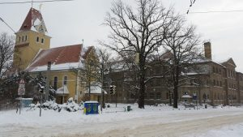
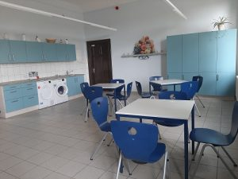
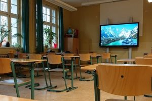
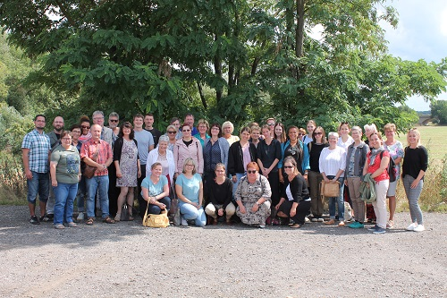
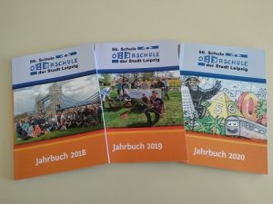

über uns
Projekte
Freizeit
über uns
Im Stadtbezirk Südwest im Leipziger Stadtteil Großzschocher liegt das Areal unserer 56. Oberschule.
Gut zu erreichen mit öffentlichen und privaten Verkehrsmitteln unweit der Kreuzung von Dieskaustraße und Huttenstraße bzw. Brückenstraße zu finden, liegt neben der alt ehrwürdigen Apostelkirche das bereits 1896 eingeweihte Gebäude unserer Schule. Täglich gelangen viele Schüler aus der näheren Umgebung wie Groß – und Kleinzschocher teilweise auch zu Fuß zu uns. Aber auch aus den südlicher gelegenen Stadtgebieten wie Knauthain, Knautkleeberg, Knautnaundorf und Rehbach sowie den Bereichen Grünau, Schleussig und sogar aus der Nachbarstadt Markkleeberg kommen die Schüler teilweise mit dem Rad, per Bus und Bahn an Schultagen hierher.
In den vergangenen Jahren ist es uns gelungen den bautechnischen Zustand des Gebäudes und die Ausstattung der
Unterrichtsräume an moderne Standards anzugleichen. Bei laufendem Schulbetrieb fand seit 2012 die brandschutztechnische
Aufrüstung und die angemessene Neuausrichtung zahlreicher Bereiche statt.

So können wir jetzt auf einen ansehnlichen Profilbereich mit einer modernen Lehrküche, einem Elektrokabinett, Werkräumen und einem Nähkabinett verweisen.
Für die Arbeit mit neuen digitalen Medien sind Laptops, PCs und interaktive Tafeln in mehreren Räumen angeschafft wurden. 
Verschiedenste Ganztagesangebote können in der Mediathek, im Schulklub, im Dachgeschoss mit einem schuleigenen Theaterbereich abgesichert werden. Auch den nahegelegenen Schulgarten „Elstertal“ nutzen wir intensiv gemeinsam mit gewonnenen Helfern zur Umweltbildung unserer Schüler.
Kernstück und Hauptaufgabe ist und bleibt für uns die Gewährleistung eines attraktiven Unterrichts. Dies ist vor allem für die derzeit ca. 470 Schüler in 19 Klassen durch ein engagiertes Lehrerkollegium Wirklichkeit geworden. Dabei sind wir sehr froh über den Zustrom vieler jüngerer Lehrer, die gemeinsam mit dem erfahrenen Stammkollegium eine gelungene Einheit bilden. Besonders in den vergangenen zwölf Jahren konnten wir mehrere Unterstützer wie Mitarbeiter für die Schulsozialarbeit, für den Schulklub und die Schulassistenz gewinnen, die unsere tägliche Arbeit bereichern. Ein besonderer Schwerpunkt liegt für uns im Bereich der Berufsorientierung und Berufsberatung. Dazu stehen uns eine Praxisberaterin, eine Berufseinstiegsbegleiterin und eine Mitarbeiterin der Arbeitsagentur zur Seite.
Hervorzuheben möchten wir beispielhaft Projekte wie „www-wir-weit-weg“, das dem europäischen Jugendaustausch fördert. Außerdem sind anzuführen Initiativen wie „Schüler lesen Zeitung“, der „Vorlesewettbewerb des Deutschen Buchhandels“, die Teilnahme an zahlreichen Sportwettkämpfen und die Zusammenarbeit mit dem um die seelische Gesundheit der Schüler bemühten Verein „Irrsinnig menschlich“. Auch im Schulumfeld pflegen wir zahlreiche Kontakte wie beim Runden Tisch Großzschocher, wo sich die Schulleitung mit dem Pfarrer der erwähnten Gemeinde, den Vertretern des Jugendtreffs der Insel und der Bürgerpolizistin zu aktuellen Fragen austauschen.
Der Schulalltag ist für uns stets herausfordernd und manchmal sehr überraschend. Die kleinen und großen Erlebnisse können im regelmäßig erscheinenden Jahrbuch und in der Schulchronik nachgelesen werden. So besuchen uns seit Jahren in großer Zahl Schülergenerationen, die nun bereits Eltern und Großeltern geworden sind, zum Tag der offenen Tür.
Text: H. Starke